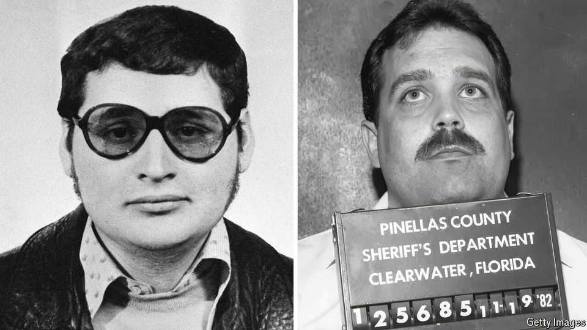

What do a spoiled Venezuelan and poor Texan have in common?
Villainy, facilitated by enablers who helped them thrive, as two new books show

Sep 3rd 2026
BIOGRAPHICALLY, the two men could not be more different. One is a worldly Venezuelan polyglot, the son of a champagne communist who named him and his brothers after a “hero” of the Soviet revolution. The other was the son of a violent refinery worker; he grew up in a shabby one-bedroom house in south-eastern Texas and volunteered for Lyndon Johnson’s presidential campaign. The former became the most notorious terrorist of the 20th century and is living out the end of his days in a prison outside Paris. The other cycled through jails, wives and multiple personae before dying, overweight and alone, in a nursing home near Dallas in 2020.
Both are the subjects of new biographies that illuminate the systems and circumstances that help villains thrive. The terrorist, Ilich Ramírez Sánchez (pictured, left), was a Marxist-Leninist and early practitioner of terrorist spectacle, motivated by leftist politics and self-enrichment. After lobbing a grenade into a crowd in Paris in 1974, leaving two dead and 34 wounded, then killing two policemen, he acquired a sobriquet—Carlos the Jackal—from the first name used in a false passport and a spy novel found in an apartment where he had stayed.
He was behind several headline-grabbing attacks in the 1970s and 80s, which included occupying OPEC’s headquarters in Vienna, launching rockets at Israeli planes, bombing buildings and trains in France with the aim of freeing his future wife from prison and bombing Radio Free Europe’s headquarters in Munich. In 1994 the CIA finally captured him in Khartoum and handed him over to France, where he is currently serving three life sentences.
Mr Sánchez is a type probably familiar to anyone who attended university: the spoiled rich boy who embraces leftist politics to make himself a hero. He championed Marxism, Palestinian liberation and, later, “revolutionary Islam” while indulging his tastes for luxury, booze, women and violence. One former confrère noted he took “pure pleasure in killing”. He boasted to Joby Warrick, the book’s author and a veteran national-security reporter for the Washington Post, “I killed 83 people…Another thousand were killed on my orders.”
Why did he become a murderous terrorist rather than just a petty criminal or shouting serial demonstrator with a few ill-advised piercings? Because he found his way to the Popular Front for the Liberation of Palestine (PFLP), a Marxist group, just as its co-founder, Wadie Haddad, embraced terrorist spectacle as a tactic. “We must become…a bacillus that gets under the skin of the developed world,” Haddad told a subordinate. That attitude let Sánchez play revolutionary hero while indulging his bloodlust on a global stage.
The protagonist of Pamela Colloff’s “Catch the Devil” also benefited from enablers—not other outlaws, as with the Jackal, but those operating within the legal system. Paul Skalnik (pictured, right) was charged with grand theft, larceny, forgery, sexual assault of a child and more. He served far less time than he should have because he made himself useful to police and prosecutors: other inmates seemed to have an uncontrollable urge to confess their crimes to him in private. Snitching on fellow jailbirds can reduce an inmate’s sentence, which is why police and prosecutors should treat such revelations with caution.
Skalnik lived in Pinellas County, Florida, at a time when the chief prosecutor pursued what Ms Colloff calls “a law-and-order agenda whose mandate was to put away as many people as possible for as long as possible”. His testimony won several people execution sentences, including Jim Dailey, a hometown hero-turned-alcoholic after serving in Vietnam, who appears in Ms Colloff’s account to be innocent but remains on Florida’s death row at the age of 80.
Both Skalnik and Mr Sánchez benefited from systems that rewarded their deepest, worst impulses. Maybe each would have found their way to mischief anyway. But readers cannot help wonder several things. What if police and prosecutors had been just a little more sceptical of a man who seemed to provide perfect information on demand? And what if the PFLP had sent Carlos packing? Ms Colloff’s tale is more an indictment of a system than a pure biography, as Mr Warrick’s is. But both books are terrific tales: difficult not to devour in a single setting, and difficult not to wrestle with for days afterwards. ■